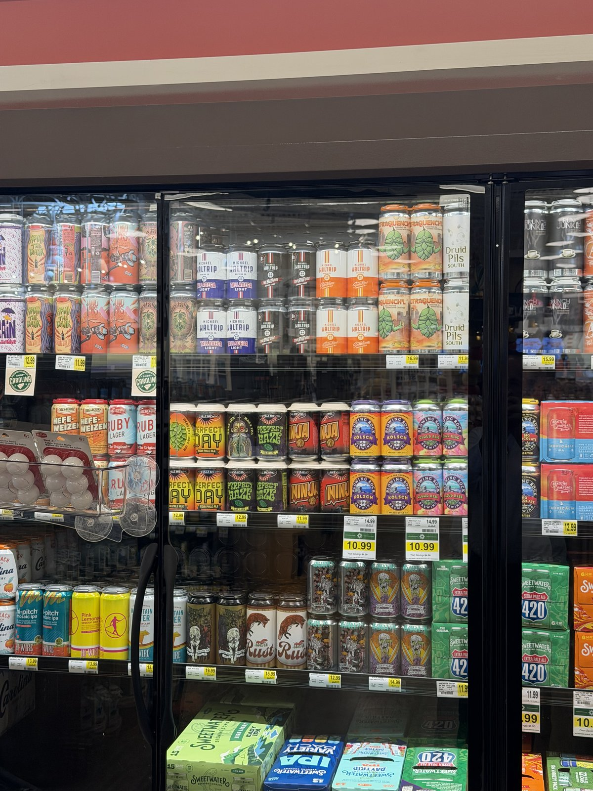

My cousin Wade called this afternoon, then texted, then called again. Kannapolis is getting a Lowes Foods. Opens tomorrow morning. From the way he was carrying on you'd have thought somebody was cutting a ribbon on a speedway.
He sent pictures. A whole roll of them. The building first. Brick front, green roof, flags out by the road, the lot still black and clean before anybody'd had a chance to track it up. There's a truck parked in the corner of the frame that could pass for mine, if mine were ten years newer and had never worked a day.
Then the inside. Watermelons stacked in a bin about the size of a kiddie pool, three ninety-nine apiece, under a sign that said Pick & Prep like the produce came with its own pit crew. Wade has never cooked a vegetable in his life. He sent the picture anyway.
He saved the good one for last.
A beer cooler, door after door of it. Four rows down, sitting on a Kannapolis shelf like it had always been there, The Big One. The double lager. Same one the Meg hauled back from that Waltrip place over in Cornelius, the one we drank on the porch until Sarah took the rest away from me.

Didn't know it had gotten that far. Last I checked you had to drive to the brewery to put your hands on it. Now my cousin can walk in off the street and set a six-pack in the cart next to his watermelon.
Sarah read it over my shoulder. Said her dad would have something to say about a beer called The Big One showing up for sale in Earnhardt's hometown. She's probably right. He'd say it with a straight face, too.
Wade wants us to come down for the opening. Hour and a half south, on a Thursday, for a grocery store. Told him we'd get there. Sometime. Not tomorrow.
He's going to be first in line either way. For a grocery store. Don't think I've ever been prouder of him.